Read-only session analytics
Reconstruct complete session timelines, inspect tool execution durations, parse git activity, and track token usage from local transcripts — with zero hooks required.
AgentLens reconstructs coding sessions, computes deterministic quality metrics, and provides personalized coaching — reading transcripts and telemetry directly from your own machine without a single cloud request.
Open source · Privacy-first · Works entirely offline
Core capabilities
Designed for developers who demand full visibility into AI coding agent performance, tool friction, and configuration safety.
Reconstruct complete session timelines, inspect tool execution durations, parse git activity, and track token usage from local transcripts — with zero hooks required.
34 deterministic rules trigger actionable recommendations backed by queryable evidence — never generic LLM guesses. Every finding links to exact transcript timestamps.
Analyze prompt structure and clarity against personal and project baselines. Compare usage against a configurable capability and cost tier model catalogue.
Audit coding agent settings for overly permissive permissions or stale MCP servers. Generates safe patches you inspect, approve, back up, and can revert at any time.
Built on decoupled
SourceAdapter interfaces. Claude Code is the first supported adapter,
ready to extend to other agents without touching the analysis engine.
Redaction runs before persistence and before logging. API keys, authorization headers, environment variables, and real home paths are stripped automatically.
Transparent intelligence
Every recommendation is governed by deterministic rules with explicit triggers, confidence scaling, and safe manual remediation paths.
Privacy architecture
Compare our three privacy modes. Even under full local storage, AgentLens binds strictly to loopback and automatically sanitizes credentials.
Local dashboard UI
Click any screenshot to inspect the fast, loopback-served dashboard interface. All examples use synthetic fixtures.
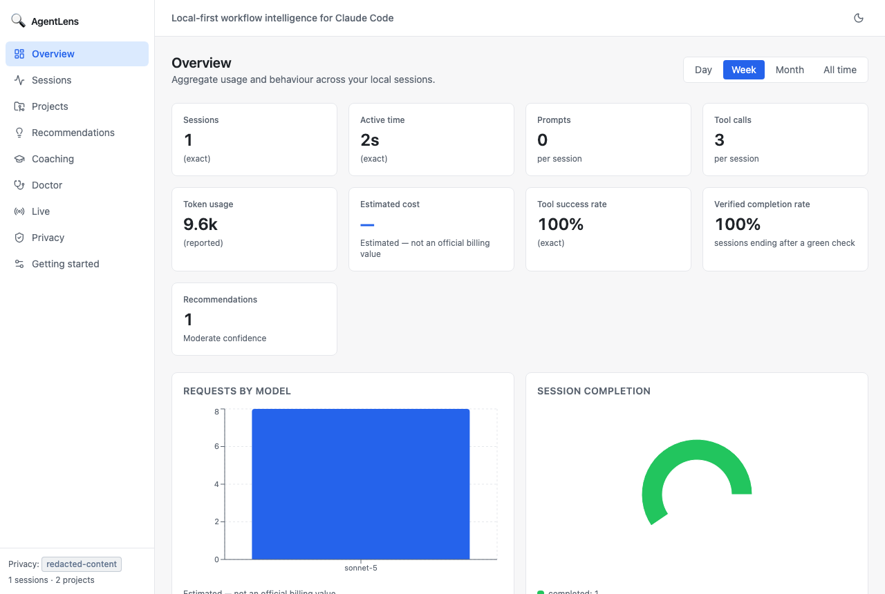
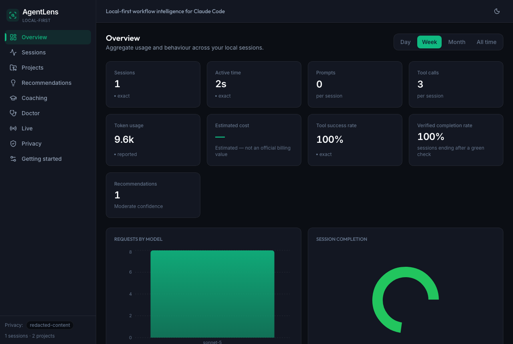
Aggregate coding agent activity, time distribution, and clear estimated cost caveats.
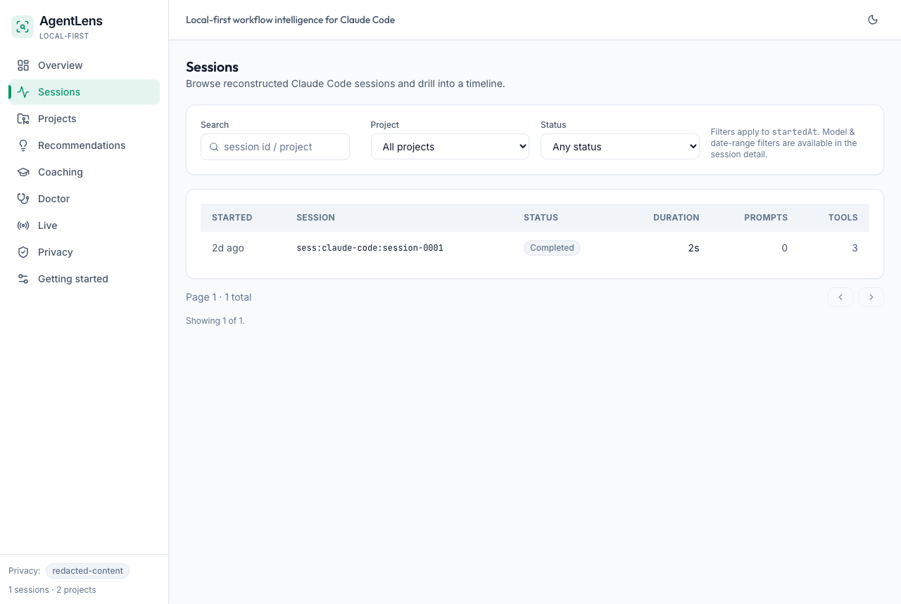
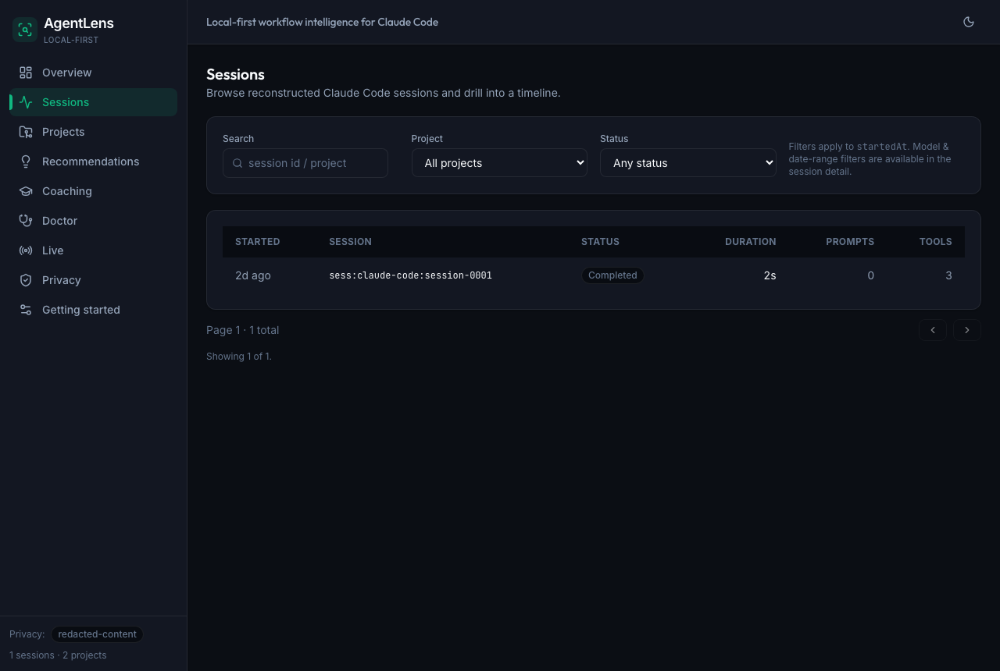
Searchable list of all local sessions with duration, tool counts, and activity indicators.
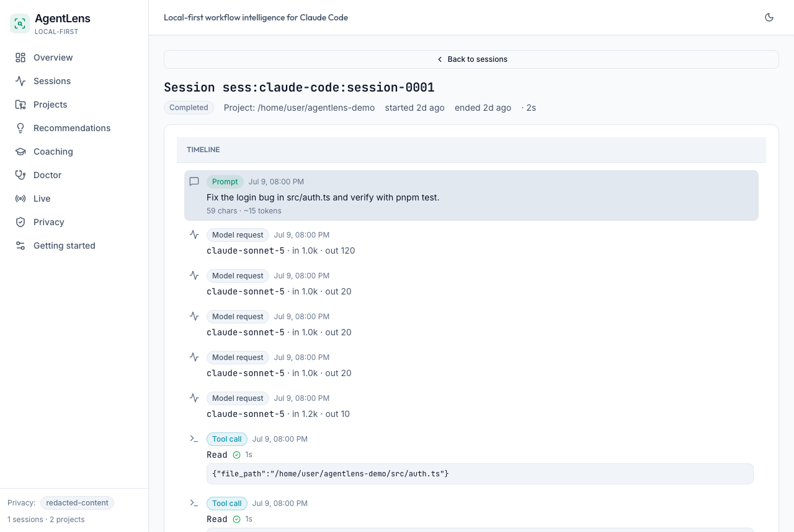
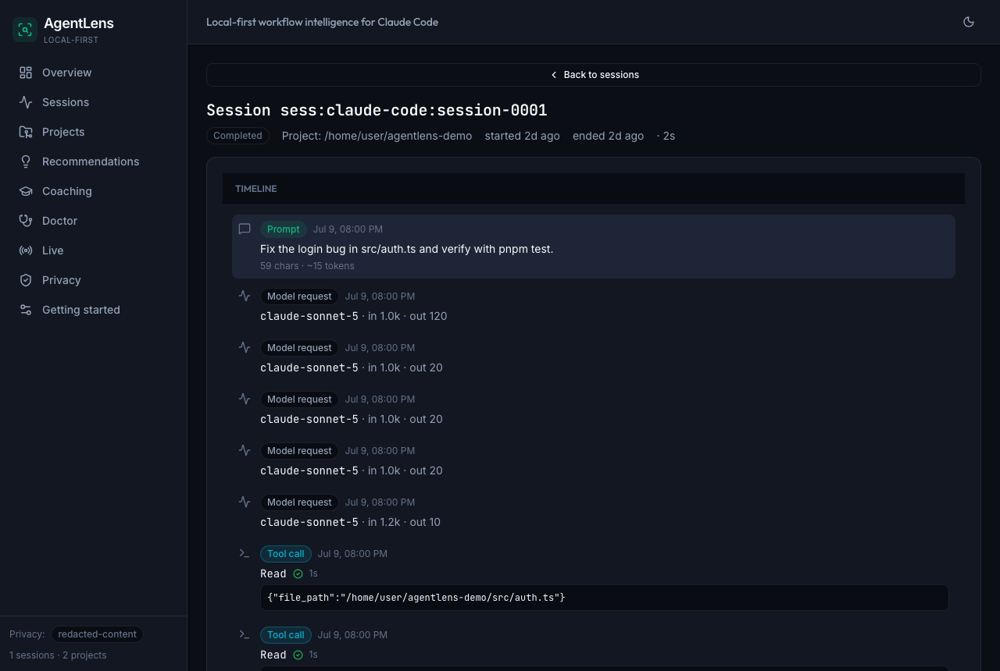
Granular chronological breakdown of prompts, shell execution, and file mutations.
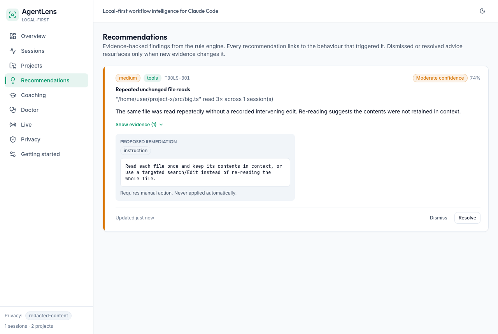
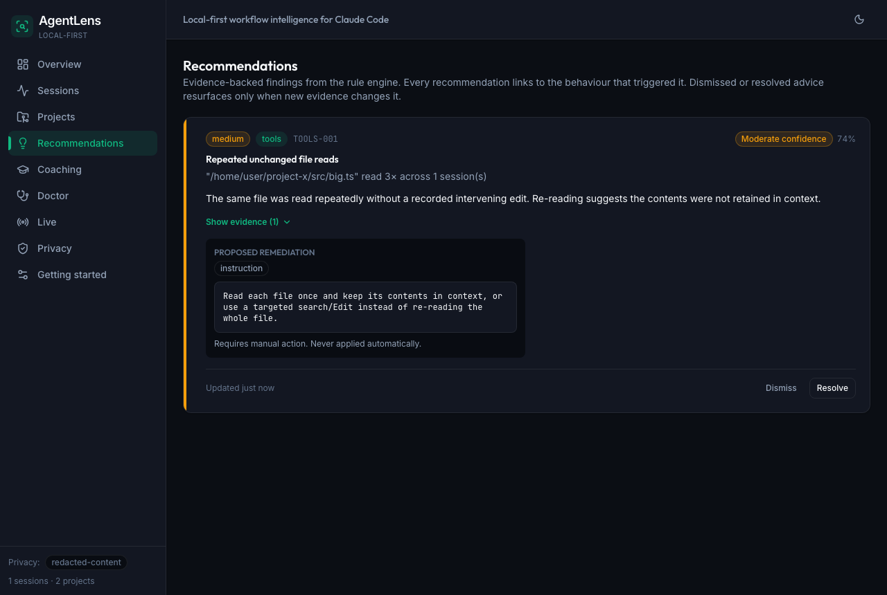
Actionable advice linking directly to structured evidence and trigger thresholds.
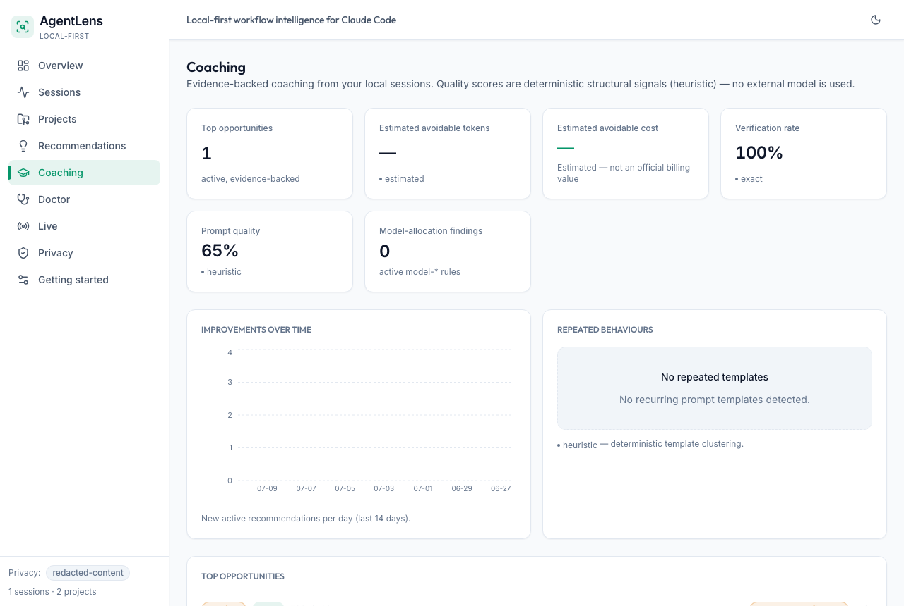
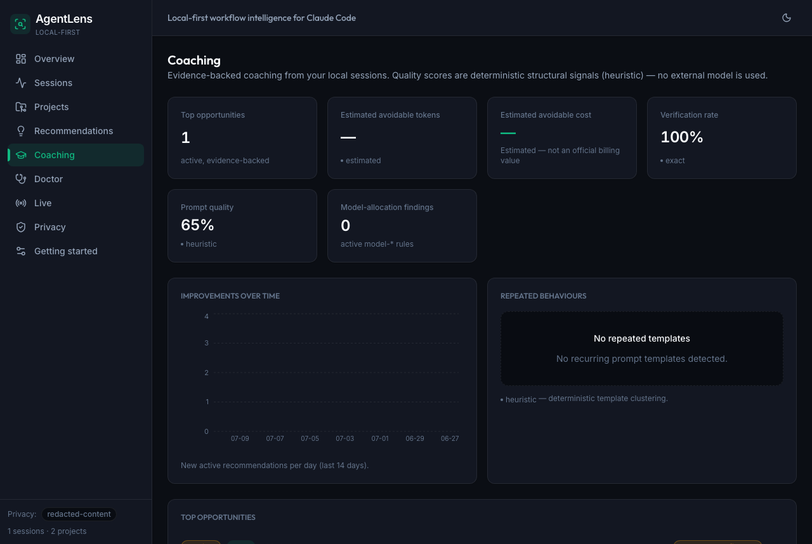
Objective coaching against personal and repository baselines — no external API calls.
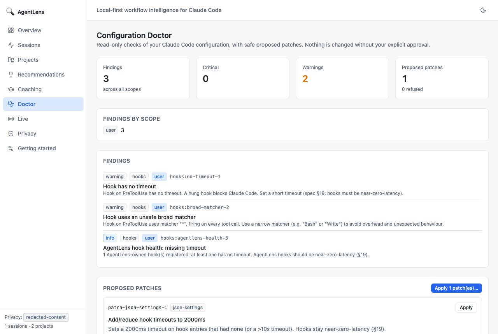
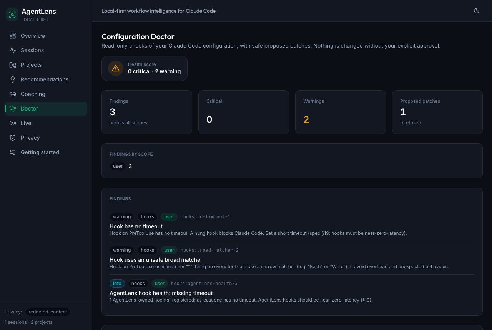
Detects risky coding agent permissions and generates safe, reviewable configuration patches.
Get started
AgentLens requires Node.js ≥ 24 and pnpm. Install from GitHub and run your first local scan in seconds.
# Clone the repository and build packages
git clone https://github.com/mhaitana/agentlens.git && cd agentlens
pnpm install && pnpm build
# Initialize local environment and scan sessions
agentlens init
agentlens scan
agentlens report --period week
Contributors guide
Join us in building the open standard for AI coding agent observation and coaching.
Add support for new coding agents by implementing the clean
SourceAdapter interface. Parse local files and stream events without
touching core analytics.
Create new rules in
@agentlens/analysis-engine. Every rule must define documented triggers,
deterministic confidence, and structured evidence.
All pull requests pass our rigorous quality gate: format, lint, typecheck, unit tests, integration tests, full build, and Playwright E2E suites.